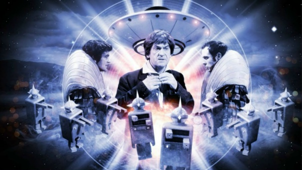
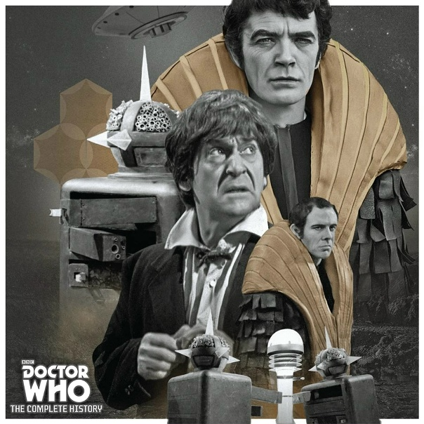

Эра Второго Доктора (6 сезон)
<<< НАЗАД ||| 1. Доминаторы ||| ДАЛЬШЕ >>>
Субтитры: Русские и Английские |  |
|---|
10 августа - 7 сентября 1968
5 эпизодов по 25 мин.
| 1, 2, 4 и 5-й эпизоды сохранились - 16mm t/r + 3-й эпизод на 35mm плёнке * 3-й эпизод найден в 1978 г. - 16mm t/r |
|---|
 |  |
«Доминаторы» — безжалостные завоеватели прибывают на планету Далкис: они хотят превратить её в топливо, используя радиацию и рабский труд, а роботы‑кварки прокладывают путь к катастрофе. Второй Доктор, Джейми и Зои бросают вызов холодной логике захватчиков, срывая их план и спасая планету ценой отчаянной хитрости. Тон серии — жёсткий и напряжённый, будто сама земля дрожит под тяжестью чужих амбиций.
VHS - сентябрь 1990 |  DVD - 12 июля 2010 * Версия в нашей группе |
|---|




